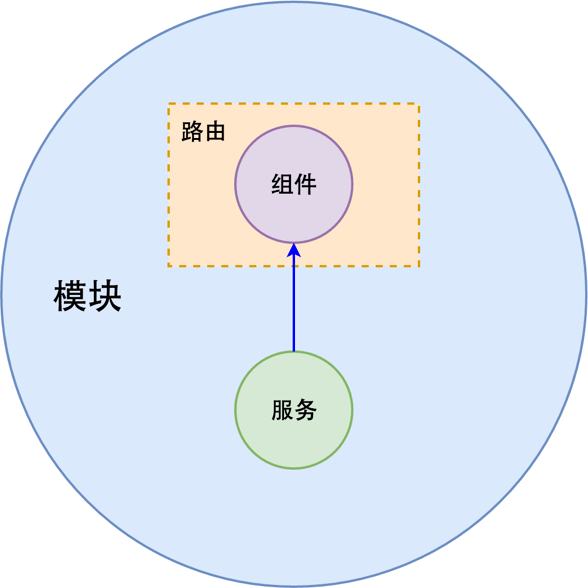

今天，等了许久的Angular2发布了正式版本，大家从此再也不用担心升级造成的兼容问题了。为了让自己对Angular2有一个更加清晰和深入的理解，我决定写一系列的关于Angular2的文章。本文是第一篇。
再开始整体介绍之前，先说下系列文章的内容：
从文章的内容看，我的介绍方式是先概念走起，然后介绍对应的具体实现。需要清楚的是，概念可以对应多个具体实现，概念的理解是用好Angular2的基础。下面开始本文内容。
Angular2是一个框架。所谓框架，即约束也。维基百科上说：框架就是制定一套规范或者规则（思想），大家（程序员）在该规范或者规则（思想）下工作（来自这里）。因此，好的框架在于它有一套通用且容易理解的规范，开发者在这些约束下可以编写高效的，利于开发者之间理解的代码。我觉得这是框架的价值所在。
Angular2作为一个框架，它有自己的一套规范。作为框架的使用者，我们应该了解框架的规范，理解这些规范的好处及每个规范使用的场景。需要记住的是，一旦确定要使用某个框架进行开发，我们就应该严格遵守框架所制定的规范。Angular2提供了两个方面的规范：抽象和接口。
抽象的价值在于分解开发者的关注。在编程的过程中，我遇到的最主要的问题是随着代码量的增加，同时需要思考的内容就越多。然而，我们大脑只有4个工作记忆槽，简单说就是无法同时思考太多的东西。抽象可以解决这个问题，抽象封装某个功能的细节，开发者只需要知道该功能的使用方式。更近一步，小抽象可以组合成大抽象。在Angular2中，提供了服务和组件的概念，其实它们都是某种抽象，威力在于它们的组合能力。比如，服务是一个单一功能代码块的称呼，使用者无需关注其内部实现，同时服务可以组合，形成更大的服务。
接口的价值在于统一开发者的理解。在开发过程中，团队合作必不可少。能否简单可靠地理解队员的代码将会极大的影响合作效率。Angular2框架提供了统一的接口，使得每种抽象都有对应的实现接口，队员对接口的理解也很一致。这在理解上是一个极大的进步，因为大家是在一个共同的背景（框架）下去理解代码的，不再需要换位思考了。总结来说，抽象用于控制复杂度，接口用于协作。
说了这么多，现在给出Angular2是什么的一个回答：Angular2是一个框架，也是一个工具。这个工具能够提高开发者控制代码的能力，同时提高团队协作效率。更具体地说，Angular2是一个用于开发网页应用的工具。结合网页应用的特点，它提供了各个层面的模块化：业务层、视图层、数据层。相同层之间可以相互嵌套，不同层之间可以进行交流。视图层定义界面，数据层给视图层提供数据和计算。多个视图层可以组合成为业务层。
是的，从整体上来看Angular2这个框架，是非常的简单和好理解。不过，要使用好这个框架，就需要理解它涉及到的每一个概念和具体的使用方法。
此文为Angular2的整体介绍，不应该涉及过多细节。因此此处只介绍Angular2包含的两个重要概念：组件和服务。除了这两个概念，Angualr2还包含了模块、路由等概念。
做过前端开发的程序员都知道，HTML用于设置内容，CSS用于设置内容的样式。这种开发方式应该会一直存在下去，因为这是一种经过了实践的，用于开发界面相关应用的方式。但是，现有的HTML标签非常有限，功能也过于简单，修改内容过于繁琐，复用起来也非常的麻烦。而现在网页应用承载的功能却越来越多，网站越来越复杂了。正因如此，组件的概念孕育而生。可以简单的理解为组件是HTML标签的扩展，解决HTML标签存在的问题。
组件与标签最主要的区别在于，组件提供了标签的功能，同时简化了内容变化的操作，界面和变量之间存在天然的联系。请看下面两个视图片段代码，分别有标签和组件写成：
标签的方式：
<!-- html标签 -->
<ul>
<li>条目1</li>
<li>条目2</li>
<li>条目3</li>
</ul>
组件的方式：
<!-- 模版 -->
<ul>
<li *ngFor="let item of items">
{{ item }}
</li>
</ul>
// 模版对应的组件类
class ItemsComponent {
items: Array<string> = [
'条目1',
'条目2',
'条目3'
];
}
可以看出，组件将标签与代码组合，标签更多作为一个模版，模版中的数据来自于代码中的变量。同时，在复用性上面，我们只需要在其它组件里调用该组件名称即可，而原来的方式无外乎复制某个片段的标签。在修改内容方面，组件更加容易，不过这里实际上是对DOM操作的封装而已。因此我觉得组件带来的主要好处是对DOM操作的解脱，同时拥有高可复用性。
再来谈谈服务。服务的魅力依然是抽象，不过它是数据层面的抽象。那么，哪些代码属于服务呢？以下功能应该属于服务：
这样来说，服务应该是一个非常通用的概念，而不只是存在于前端开发，包括后端等领域都会有它的身影。实际上，Angular2中服务使用了面向对象编程中的依赖注入来实现。它的目的是降低代码之间的耦合度，其实就是让一个框架来管理代码之间的依赖。调用者是向管理框架申请某个服务，服务的初始化由框架进行，调用者无需关注具体的初始化方式。
这里稍微详细介绍下依赖注入。在面向对象编程中，对象是基本单位，对象拥有属性和方法。使用某个对象提供的方法时，是先实例化该对象，然后调用得到的实例的该方法。现在的问题是这个实例化过程在调用者的代码里，如果该对象实例化方式修改了，所有依赖该对象的调用者都需要修改。这样的依赖方式导致代码非常脆弱，不利于维护和升级。所以出现了依赖注入，它的作用是把对象的实例化交给框架，调用者只是向框架申请需要某个对象，并不做具体的实例化。怎么说呢，事情是一样都不会少，只是将这种实例化的工作交给了代码而不是开发者。想到这里，我突然意识到，所谓的框架，就是把部分人的工作交给了代码。因为交给了代码来做，与代码的交互只能变的固定了。比如Angular2中注册服务的接口，必须得使用特定方式，使用的时候也只能通过特定的方式。
扯的够多了，最后来总结下。Angular2是一个大而全的框架，用于开发网页应用（或类似应用）。它倡导组件化、服务化，其实也就是模块化。此方法能很好的处理复杂，各种层面的复杂，同时也能提高协作的效率。
最后给一张Angular2主要概念的关系图：
